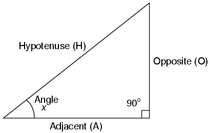
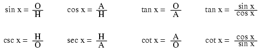
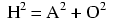
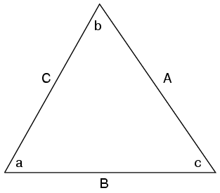
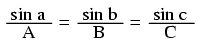
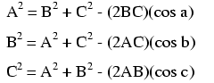
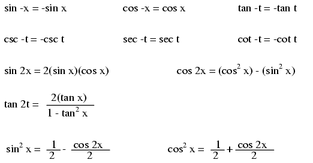
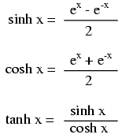

A right triangle is defined as having one angle precisely equal to 90o (a right angle).

H is the Hypotenuse, always being opposite the right angle. Relative to angle x, O is the Opposite and A is the Adjacent.
"Arc" functions such as "arcsin", "arccos", and "arctan" are the complements of normal trigonometric functions. These functions return an angle for a ratio input. For example, if the tangent of 45o is equal to 1, then the "arctangent" (arctan) of 1 is 45o. "Arc" functions are useful for finding angles in a right triangle if the side lengths are known.






Note: all angles (x) must be expressed in units of radians for these hyperbolic functions. There are 2π radians in a circle (360o).
Contributors to this chapter are listed in chronological order of their contributions, from most recent to first. See Appendix 2 (Contributor List) for dates and contact information.
Harvey Lew (??? 2003): Corrected typographical error: "tangent" should have been "cotangent".
Lessons In Electric Circuits copyright (C) 2000-2023 Tony R. Kuphaldt, under the terms and conditions of the CC BY License.